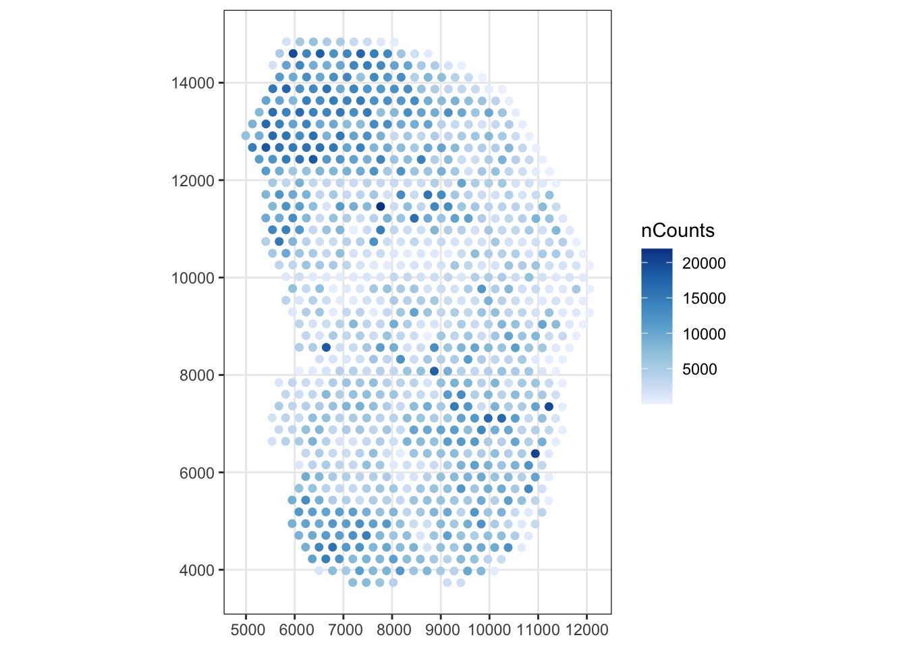
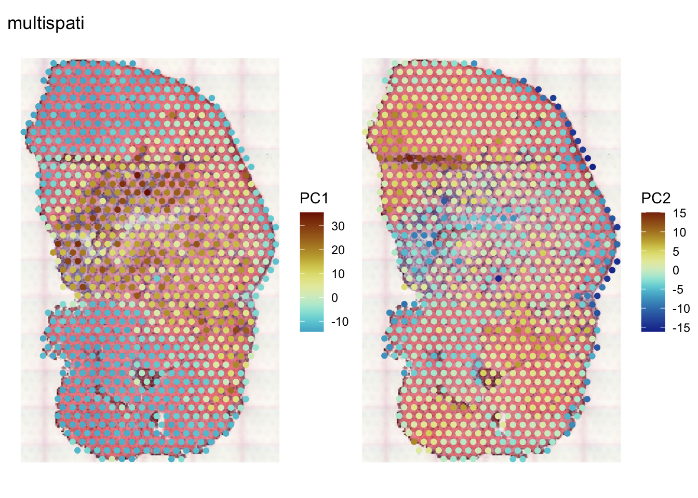

BiocManager::install(version = "3.17")
# dependencies = TRUE to install suggested packages including scater and SFEData
BiocManager::install("Voyager", dependencies = TRUE)Space, the current frontier. These are the voyages of starship Voyager. This is the second release of R package Voyager with the Bioconductor 3.17 release. I miss starship Voyager1 and its awesome voyages in geographical space, and if it can think it probably also misses me Captain Lambda Janeway. Because I spent my time turning geospatial ideas from starship Voyager into new features in R package Voyager, which I’m announcing here.
In addition, we are getting more like the USS Voyager crew in Star Trek – we now have a team working on this project after the first release. While I’m still pretty much the only author of the code, the team made awesome contributions to the vignettes and documentation website.
You can install the new release from Bioconductor, and note that R 4.3 is required:
This will also install SpatialFeatureExperiment (SFE), an S4 class that brings Simple Feature to SpatialExperiment and SingleCellExperiment (SCE). Voyager to SFE is just like scater and scran to SCE and Seurat to SeuratObject, performing exploratory spatial data analysis (ESDA) and data visualization based on the data structure SFE. The SFEData package is for example datasets used extensively in Voyager’s vignettes, code examples, and some unit tests.
First load the packages used to demonstrate the new features; all of these packages are imported or suggested by Voyager unless noted otherwise.
library(Voyager)
library(SpatialFeatureExperiment)
library(SpatialExperiment)
library(SFEData)
library(scater)
library(scran)
library(ggplot2)
library(scico)
library(pheatmap)
library(terra)
library(patchwork)
library(bench) # not imported or suggested
library(tidyverse) # not all imported or suggested
theme_set(theme_bw())The mouse skeletal muscle Visium dataset from (McKellar et al. 2021) is used to demonstrate the new features:
(sfe <- McKellarMuscleData())see ?SFEData and browseVignettes('SFEData') for documentationloading from cacheclass: SpatialFeatureExperiment
dim: 15123 4992
metadata(0):
assays(1): counts
rownames(15123): ENSMUSG00000025902 ENSMUSG00000096126 ...
ENSMUSG00000064368 ENSMUSG00000064370
rowData names(6): Ensembl symbol ... vars cv2
colnames(4992): AAACAACGAATAGTTC AAACAAGTATCTCCCA ... TTGTTTGTATTACACG
TTGTTTGTGTAAATTC
colData names(12): barcode col ... prop_mito in_tissue
reducedDimNames(0):
mainExpName: NULL
altExpNames(0):
spatialCoords names(2) : imageX imageY
imgData names(1): sample_id
unit: full_res_image_pixels
Geometries:
colGeometries: spotPoly (POLYGON)
annotGeometries: tissueBoundary (POLYGON), myofiber_full (POLYGON), myofiber_simplified (POLYGON), nuclei (POLYGON), nuclei_centroid (POINT)
Graphs:
Vis5A: sfe <- sfe[,sfe$in_tissue]
sfe <- logNormCounts(sfe)
colGraph(sfe, "visium") <- findVisiumGraph(sfe)Documentation
For the new release, we have expanded and reorganized the documentation website:
We wrote vignettes for several major spatial -omics technologies (Kayla Jackson). In the first release, there were vignettes for Visium, Slide-seq, CosMX, Xenium, and MERFISH, and in the second version, we added vignettes for seqFISH, CODEX, and applying spatial statistics that use a spatial neighborhood graph to the k nearest neighbor graph in gene expression PCA space in a 10X Chromium non-spatial scRNA-seq peripheral blood mononuclear cells (PBMC) dataset. We also added more introductory vignettes using a mouse olfactory bulb Visium dataset from 10X’s website to guide users working with Space Ranger output.
Kayla created a landing page for each spatial -omics technology, with a short description of the technology and a table linking to vignettes for this technology. Laura Luebbert created a GitHub Action to automatically convert the R Markdown vignettes into Jupyter notebooks on Google Colab and added some code using her gget package to get gene info in some of the vignettes. The Colab notebooks are also linked in the table on the landing pages.
I created a landing page for each spatial analysis method, analogous to the technology landing pages, with an intro to the method and a table linking to the sections in vignettes that use the methods.
While some of the new features of Voyager are demonstrated below, I will also refer to the relevant new vignettes for more details.
listSFEMethods()
In Voyager 1.2.0 we added the listSFEMethods() function to show all spatial methods implemented in Voyager. For instance, to show all univariate global methods, use
listSFEMethods("uni", "global") name description
1 moran Moran's I
2 geary Geary's C
3 moran.mc Moran's I with permutation testing
4 geary.mc Geary's C with permutation testing
5 sp.mantel.mc Mantel-Hubert spatial general cross product statistic
6 moran.test Moran's I test
7 geary.test Geary's C test
8 globalG.test Global G test
9 sp.correlogram Correlogram
10 variogram Variogram with model
11 variogram_map Variogram mapWhen calling a function like calculate*variate() or run*variate(), the type (2nd) argument should match an entry in the name column.
These are all univariate local methods:
listSFEMethods("uni", "local") name description
1 localmoran Local Moran's I
2 localmoran_perm Local Moran's I permutation testing
3 localC Local Geary's C
4 localC_perm Local Geary's C permutation testing
5 localG Getis-Ord Gi(*)
6 localG_perm Getis-Ord Gi(*) with permutation testing
7 LOSH Local spatial heteroscedasticity
8 LOSH.mc Local spatial heteroscedasticity permutation testing
9 LOSH.cs Local spatial heteroscedasticity Chi-square test
10 moran.plot Moran scatter plotSpatial methods
Multivariate
The first release of Voyager only supported univariate spatial methods. However interesting the results may be, nobody wants to manually check local Moran’s I results for thousands of genes. Furthermore, there are gene programs and co-expression modules, which univariate methods miss. Voyager 1.2.0 added multivariate spatial data analysis methods, including MULTISPATI PCA (Dray, Saı̈d, and Débias 2008) (a spatially informed version of PCA) and multivariate local Geary’s C (Anselin 2019). These are all the multivariate methods:
listSFEMethods("multi") name description
1 multispati MULTISPATI PCA
2 localC_multi Multivariate local Geary's C
3 localC_perm_multi Multivariate local Geary's C permutation testingIn the first release, I created a uniform user interface, calculateUnivariate() and runUnivariate() to call a variety of spatial analysis methods. Multivariate methods also have a uniform user interface in calculateMultivariate() to directly return the results, and runMultivariate() to store the results in reducedDims(sfe), or if applicable, colData(sfe).
Here we run MULTISPATI PCA with 20 positive and 20 negative eigenvalues on highly variable genes:
hvgs <- getTopHVGs(sfe, n = 1000)sfe <- runMultivariate(sfe, "multispati", nfposi = 20, nfnega = 20,
subset_row = hvgs)Plot the eigenvalues: The ElbowPlot() function has been updated to plot negative eigenvalues which signify negative spatial autocorrelation and to color and facet when a spatial dimension reduction is run on different samples (i.e. tissue sections) separately.
ElbowPlot(sfe, ndims = 20, nfnega = 20, reduction = "multispati")
Plot projections of Visium spot gene expression profiles into each MULTISPATI PC:
spatialReducedDim(sfe, "multispati", 2, divergent = TRUE, diverge_center = 0)See the MULTISPATI vignette for an intro to MULTISPATI PCA and more in depth discussions. Voyager has an implementation of MULTISPATI PCA based on RSpectra that is much faster than the original implementation in adespatial, to meet the demands to analyze larger spatial -omics data. It is efficient enough to be performed on over 390,000 cells in the MERFISH dataset shown in the MULTISPATI vignette. See benchmark here.
Related to MULTISPATI PCA is moranBounds(), which is a more efficient implementation of adespatial::moran.bounds() to find the upper and lower bounds of Moran’s I given a spatial neighborhood graph. Basically it diagonalizes the double centered adjacency matrix of the graph. However, because the double centered matrix is dense, this can take a lot of memory for larger datasets. Here we find the Moran bounds for this Visium dataset:
(mb <- moranBounds(colGraph(sfe, "visium"))) Imin Imax
-0.5762132 1.0021884 Usually the lower bound is closer to -0.5 than -1, and negative Moran’s I should be interpreted accordingly.
Bivariate
Bivariate methods are used to explore pairwise relationships among genes while taking spatial autocorrelation into account. These are all the bivariate global methods:
listSFEMethods("bi", "global") name description
1 lee Lee's bivariate statistic
2 lee.mc Lee's bivariate static with permutation testing
3 lee.test Lee's L test
4 cross_variogram Cross variogram
5 cross_variogram_map Cross variogram mapThese are all the bivariate local methods:
listSFEMethods("bi", "local") name description
1 locallee Local Lee's bivariate statistic
2 localmoran_bv Local bivariate Moran's IJust like for univariate and multivariate methods, there is a uniform user interface to run various bivariate methods: calculateBivariate() to directly return the results and runBivariate() to store the results in localResults(sfe). Note that because bivariate global results have many different formats that might not be nicely stored in the SFE object, global bivariate methods can only be called with calculateBivariate(), while runBivariate() is only for bivariate local methods. Here we compute Lee’s L (Lee 2001) which comes from the similaries and diffences between Moran’s I and Pearson correlation to top HVGs:
hvgs <- getTopHVGs(sfe, fdr.threshold = 0.01)Because bivariate global results can have very different formats (matrix for Lee’s L and lists for many other methods), the results are not stored in the SFE object.
res <- calculateBivariate(sfe, type = "lee", feature1 = hvgs)This gives a spatially informed correlation matrix among the genes, which can be plotted as a heatmap:
pal_rng <- getDivergeRange(res)
pal <- scico(256, begin = pal_rng[1], end = pal_rng[2], palette = "vik")pheatmap(res, color = pal, show_rownames = FALSE,
show_colnames = FALSE, cellwidth = 1, cellheight = 1)The implementation of Lee’s L in Voyager is designed for making correlation matrices for a larger number of genes. It’s based on matrix operations and is much faster than the spdep implementation. See the bivariate vignette for more info and other bivariate methods.
Variogram
The variogram is used to model the covariance function in kriging, which uses a Gaussian process model to interpolate between spatial observations in geostatistical data. The variogram can also be an ESDA tool to show length scale of spatial autocorrelation.
The variogram shows the variance of differences in values across a range of distances. When there is positive spatial autocorrelation, the variogram increases with distance, because spatial autocorrelation reduces variance among nearby locations, until it levels off, showing the distance where spatial autocorrelation no longer has an effect. It can also show spatial autocorrelation in different directions, when there’s anisotropy. The correlogram can also show different length scales of spatial autocorrelation, but it’s not scalable to larger spatial distances.
Here we demonstrate variogram map on one gene. The variogram map shows the variogram in all directions.
sfe <- runUnivariate(sfe, "variogram_map", features = "Ftl1",
swap_rownames = "symbol", width = 500, cutoff = 3000)Note the swap_rownames argument. It was introduced in 1.2.0. In the first release, the column in rowData(sfe) for gene symbols when the row names are in fact Ensembl is assumed to be “symbol”, and the show_symbol argument is used to show the more human readable gene symbols while everything behind the scene is Ensembl IDs because the latter is more unambiguous. In 1.2.0, the show_symbol argument is deprecated, and any column can be specified in swap_rownames. This is elaborated on in the Miscellaneous section.
plotVariogramMap(sfe, "Ftl1", swap_rownames = "symbol")
Here the data is scaled by default before computing the variogram so the variograms of different genes are comparable. Here we see some anisotropy, that spatial autocorrelation decays more slowly in the east-west direction and more quickly in the northeast-southwest direction. See the variogram vignette for more details, and for bivariate cross variograms.
Run your own spatial methods with SFEMethod
The uniform user interface in Voyager is inspired by caret and tidymodels (Kuhn and Wickham 2020) that provide a uniform user interface to many different machine learning methods from different R packages, the future (Bengtsson 2021), foreach, and BiocParallel packages for different parallel processing backends, and bluster for different clustering algorithms. This can greatly reduce redundant code and learning curve for the users.
A bit more of Star Trek Voyager: We are the Borg, lower your shield and surrender your ship. You can now assimilate new spatial analysis methods. The SFEMethod S4 class was introduced so users can make Voyager run their own custom spatial analysis methods. The S4 class collects the function that runs the method, functions that reorganize the results to store in the SFE object, and metadata indicating characteristics of the methods. Build a new SFEMethod object for the custom method, and Voyager’s uniform interface can run the method and organize the results in the SFE object. See the SFEMethod vignette for how to construct an SFEMethod object.
Read Space Ranger and Vizgen output
The read10XVisiumSFE() function was introduced in the first release of SpatialFeatureExperiment to read Space Ranger output as an SFE object. Updates in the second release:
- The spatial units in the SFE object can be pixels in full resolution image (default) or microns. The latter is converted from pixels based on spacing between spots which is known to be 100 microns.
- Images are now supported.
We also added readVizgen() to read standard Vizgen MERFISH output:
dir_use <- system.file(file.path("extdata", "vizgen"),
package = "SpatialFeatureExperiment")
sfe_mer <- readVizgen(dir_use, z = 0L, image = "PolyT", use_cellpose = FALSE)The images are also read. For cell segmentation results, both the HDF5 seen in Vizgen’s example datasets and the parquet files from Cellpose. Use the use_cellpose argument to indicate whether the Cellpose results should be read instead of the HDF5. Since each field of view (FOV) has its own HDF5 file for cell segmentation and one MERFISH dataset can have hundreds of FOVs, we recommend running readVizgen() on a server with many CPU cores to read the HDF5 files, but after reading, the SFE object can be used on a laptop.
Images
The images are read as SpatRaster objects from the terra R package, so the images are not loaded into memory unless necessary. When plotting, if the images are very large, they will not be entirely loaded into memory but will be downsampled if a lower resolution is sufficient. When converting a SpatialExperiment object to SFE, the existing images will be converted to SpatRaster.
This mouse skeletal muscle dataset was not originally in standard Space Ranger output format. Also, because the first release didn’t support images, the example datasets don’t have images. But the images can be read in later:
sfe <- addImg(sfe, file = "tissue_lowres_5a.jpeg", sample_id = "Vis5A",
image_id = "lowres",
scale_fct = 1024/22208)
sfe <- mirrorImg(sfe, sample_id = "Vis5A", image_id = "lowres")We also implemented functions to transform the images, like mirrorImg, to flip the image because the origin is the top left in images but bottom left in the geometries in Cartesian coordinates.
The image is cropped when the SFE object is subsetted or cropped.
terra::plot(imgRaster(getImg(sfe)))Initially we have the full image. Then the subsetting operation will crop it to the extent of the geometries:
sfe <- sfe[,colnames(sfe)]
terra::plot(imgRaster(getImg(sfe)))Visualization
There are many updates to the plotting functions in Voyager. This sections introduces updates outside plotting functions for results of spatial methods newly incorporated into Voyager, some of which were already mentioned above.
First, this applies to all functions that plot geometries, except plotCellBin2D() and length units might be useful, that theme_void() is the default, because the length units such as pixels in full resolution image are often arbitrary and irrelevant to visualization of values in space. However, if you do want to show the units, such as when choosing a bounding box to zoom into, add a theme that show the axes such as theme_bw() to the plot from functions such as plotSpatialFeature():
plotSpatialFeature(sfe, "nCounts") + theme_bw()
Plotting the image
If the SFE object has images, they can be plotted behind geometries in all functions that plot geometries, so histology can be seen. However, note that doing so can change color perception of the palette that colors the geometries. For example, we can plot the image when plotting gene expression just like in Seurat, although I personally don’t like using a divergent palette as in Seurat while the variable plotted does not have a meaningful divergence. The argument image_id must be specified to plot an image.
plotSpatialFeature(sfe, c("Myh2", "Ftl1"), image_id = "lowres", maxcell = 5e4,
swap_rownames = "symbol")The maxcell argument is the maximum of pixels to plot in the image; if the image has more pixels than this then it will be downsampled to speed up plotting. A lower number is recommended when plotting many genes in multiple panels because a lower resolution is sufficient for the small size of the panels.
Plot the image with dimension reduction:
spatialReducedDim(sfe, "multispati", ncomponents = 2, image_id = "lowres",
maxcell = 5e4, divergent = TRUE, diverge_center = 0)
plotGeometry()
Or just plot the geometries without coloring. The plotGeometry() function was introduced to cut boiler plate and to make it easier to plot geometries from multiple samples in different facets.
plotGeometry(sfe, "spotPoly", image_id = "lowres") +
plotGeometry(sfe, "spotPoly")Dark theme
We introduced the dark theme to make plots more visually appealing when the background is a fluorescent image, but it can be used without an image as well. In the light theme, as used above, higher values have darker color, as if staining. In divergent palettes, the diverge center has a light color to emphasize values away from the center. In the dark theme, higher values have lighter color as if glowing, and in divergent palettes, the diverge center has a dark color to emphasize values away from the center.
Here we plot a gene from the MERFISH dataset, with light theme:
plotSpatialFeature(sfe_mer, "Aldh3a2", colGeometryName = "cellSeg",
image_id = "PolyT", exprs_values = "counts",
alpha = 0.7) # though the cells are covered upThe darker color for higher value gets harder to see with the dark image background. Here’s the dark theme:
plotSpatialFeature(sfe_mer, "Aldh3a2", colGeometryName = "cellSeg",
image_id = "PolyT", exprs_values = "counts",
alpha = 0.7, dark = TRUE)The higher values have lighter color so get more emphasized.
From the first release, Voyager can plot a feature associated with a column (cell or Visium spot) geometry and a feature associated with an annotation (e.g. myofibers) geometry simultaneously, with different palettes. While the individual palettes are designed to be colorblind friendly, it’s much more difficult to make the combination of two palettes colorblind friendly, but I tried pick palettes to distinct colors so they are less likely to get mixed up. The light theme has 2 default linear palettes, one for the column geometries and one for annotation geometries and 2 divergent palettes. The dark theme also has 2 default linear palettes and 2 divergent palettes, chosen from the scico package. In divergent palettes, warm colors denote values higher than the center, and cool colors denote values lower than the center. Here we use the two palettes on light and dark theme:
p1 <- plotSpatialFeature(sfe, "Myh2", colGeometryName = "spotPoly",
annotGeometryName = "myofiber_simplified",
annot_aes = list(fill = "area"),
aes_use = "color", # plot empty circles to not to cover
fill = NA, swap_rownames = "symbol", linewidth = 0.5)
p2 <- plotSpatialFeature(sfe, "Myh2", colGeometryName = "spotPoly",
annotGeometryName = "myofiber_simplified",
annot_aes = list(fill = "area"), aes_use = "color",
fill = NA, swap_rownames = "symbol", linewidth = 0.5,
dark = TRUE)
p1 + p2Also to show the divergent palettes; the myofiber areas don’t have meaninful divergence, but a divergent palette is used just to show both divergent palettes. Whether to use divergent palette needs to be set separately for colGeometry and annotGeometry, because as in this case, one can have meaningful divergence while the other does not.
area_median <- median(annotGeometry(sfe, "myofiber_simplified")$area)
p1 <- spatialReducedDim(sfe, "multispati", components = 2,
colGeometryName = "spotPoly",
annotGeometryName = "myofiber_simplified",
annot_aes = list(fill = "area"), aes_use = "color",
fill = NA, swap_rownames = "symbol", linewidth = 0.5,
divergent = TRUE, diverge_center = 0,
annot_divergent = TRUE,
annot_diverge_center = area_median)
p2 <- spatialReducedDim(sfe, "multispati", components = 2,
colGeometryName = "spotPoly",
annotGeometryName = "myofiber_simplified",
annot_aes = list(fill = "area"), aes_use = "color",
fill = NA, swap_rownames = "symbol", linewidth = 0.5,
divergent = TRUE, diverge_center = 0,
annot_divergent = TRUE,
annot_diverge_center = area_median,
dark = TRUE)
p1 + p2Again, just like when plotting the image behind the geometries, plotting with two color palettes can distort color perception of either palette and can result into colors from different palettes that are hard to tell apart, so use with caution.
Zoom into a bounding box
Some spatial -omics dataset cover large areas of tissue. Moreover, there are different length scales of spatial dependence. Plotting the entire tissue will make the smaller scale spatial patterns more difficult to see. So we introduced the bbox argument in all functions that plot the geometry, to zoom into a small area.
First specify a bounding box, which should be a named numeric vector:
bbox_use <- c(xmin = 6000, xmax = 8000, ymin = 10000, ymax = 12000)Then plot as usual:
spatialReducedDim(sfe, "multispati", ncomponents = 2, image_id = "lowres",
divergent = TRUE, diverge_center = 0, bbox = bbox_use)Deprecate plotColDataBin2D()
The first release has functions plotColDataBin2D() and plotRowDataBin2D() to avoid overplotting when there are so many cells or genes that the numerous points in the scatter plot form solid black blocks whose density can’t be discerned.
plotColDataBin2D(sfe, x = "nCounts", y = "nGenes", bins = 50, hex = TRUE)Warning: plotCol/RowDataBin2D() was deprecated in Voyager 1.2.0.
ℹ Please use scater::plotCol/RowData() instead.
ℹ Set `bins` argument to enable binning.These functions are deprecated in Voyager 1.2.0, because they are now part of scater in Bioconductor 3.17:
plotColData(sfe, x = "nCounts", y = "nGenes", bins = 50, hex = TRUE) +
# Change palette
scale_fill_distiller(palette = "Blues", direction = 1)Scale for fill is already present.
Adding another scale for fill, which will replace the existing scale.When bins = NULL, which is the default, the points are plotted. I find scater a more appropriate place for these functions because they apply to SingleCellExperiment in general and are irrelevant to plotting in histological space. It should not be necessary for users who analyze non-spatial scRNA-seq data to install Voyager just for this function.
Miscellaneous
These are the various nitty gritty technical updates in version 1.2.0:
Gene symbols vs. Ensembl IDs
Sometimes different Ensembl IDs match the same gene symbol. It’s better to perform the analysis on Ensembl IDs because they more unambiguously refer to a certain genomic region than gene symbols. Furthermore, gene symbols often have alises. However, it would be nice to show the more human readable gene symbols on plots.
In version 1.2.0, we introduced the swap_rownames argument, to be consistent with scater’s plotting functions, whenever one may wish to use gene symbols to query data while the underlying data has Ensembl IDs. This includes localResult() getters in SFE, calculateUnivariate(), runUnivariate(), calculateBivariate(), runBivariate(), all plotting functions that can plot gene information, and plotting functions of spatial analysis results of gene expression. This is already used in the sections above.
In the previous release, whether to show gene symbol was indicated by the show_symbol argument and the column in rowData(sfe) for gene symbols is assumed to be named “symbol”. Now show_symbol is deprecated, as swap_rownames allows any name of the symbol column and makes it explicit when gene symbols are plotted while the data uses Ensembl IDs. A warning is issued when a gene symbol matches multiple Ensembl IDs.
In addition, calculateUnivariate() and calculateBivariate() can return gene symbols in the results with swap_rownames specified even if the input features argument is Ensembl IDs.
Multiple results from the same method
In the previous release, the standard name of the method (name column in listSFEMethods() output) is used to store results. However, sometimes one may wish to run the same method on the same genes but with different parameters and compare the results. Doing so will overwrite the existing results with different parameters.
In this release, we allow users to specify the name under which to store the results, with the name argument in runUnivariate() and runBivariate() so results from the same method but different parameters can coexist in the same SFE object. The standard name is used by default.
In addition, the parameters are stored and checked the next time the same method is run. There’s the argument overwrite, to indicate whether to overwrite existing results when the new results were generated from different parameters. If overwrite = FALSE, then runUnivariate() or runBivariate() will throw an error when there’s existing results under the same name but with different parameters. Note that overwrite was introduced in a bug fix after 1.2.0. There already is Voyager 1.2.2 as I discovered some bugs last night after the creation of the RELEASE_3_17 branch on Bioconductor.
Here is an example of using different names:
# Getis-Ord Gi*
sfe <- runUnivariate(sfe, "localG", features = c("Myh1", "Ftl1"),
include_self = TRUE, swap_rownames = "symbol")# Getis-Ord Gi, no star
# Will throw error
sfe <- runUnivariate(sfe, "localG", features = c("Myh1", "Ftl1"),
include_self = FALSE, swap_rownames = "symbol")# Works
sfe <- runUnivariate(sfe, "localG", features = c("Myh1", "Ftl1"),
include_self = FALSE, swap_rownames = "symbol",
name = "Gi")p1 <- plotLocalResult(sfe, "localG", features = c("Myh1", "Ftl1"),
colGeometryName = "spotPoly",
image_id = "lowres", maxcell = 5e4,
swap_rownames = "symbol", divergent = TRUE,
diverge_center = 0)
p2 <- plotLocalResult(sfe, "Gi", features = c("Myh1", "Ftl1"),
colGeometryName = "spotPoly",
image_id = "lowres", maxcell = 5e4,
swap_rownames = "symbol", divergent = TRUE,
diverge_center = 0)
p1 / p2 + plot_annotation(tag_levels = "A")Faster distance based edge weights
Newer versions of spdep support distance based edge weights, such as inverse distance weighting. However, spdep’s distance based edge weights is very inefficient, because spdep does not keep the distance among neighbors returned by dbscan (which is very efficient) when computing k nearest or distance based neighbors, so when computing the edge weights, spdep has to call st_distance() to re-compute the distances, which can be very time consuming.
In SpatialFeatureExperiment 1.2.0, we use BiocNeighbors to find k nearnest and distance based neighbors, which has a uniform user interface for multiple neighbor finding algorithms such as Annoy, Hnsw, and etc. We also keep the distances returned by BiocNeighbors to calculate distance based edge weights. All the distance weighting methods in spdep are supported.
Here is a benchmark:
res <-
bench::mark(
bioc = {
g <- findSpatialNeighbors(
sfe, type = "myofiber_simplified",
MARGIN = 3L,
method = "knearneigh", dist_type = "idw",
style = "W", nn_method = "bioc"
)
},
spdep = {
g2 <- findSpatialNeighbors(
sfe, type = "myofiber_simplified",
MARGIN = 3L,
method = "knearneigh", dist_type = "idw",
style = "W", nn_method = "spdep"
)
},
# Attributes like call from spdep don't matter
check = function(x,y) all.equal(x,y, check.attributes = FALSE)
)Warning: Some expressions had a GC in every iteration; so filtering is
disabled.res# A tibble: 2 × 6
expression min median `itr/sec` mem_alloc `gc/sec`
<bch:expr> <bch:tm> <bch:tm> <dbl> <bch:byt> <dbl>
1 bioc 124.62ms 137.94ms 7.23 NA 0
2 spdep 2.25s 2.25s 0.444 NA 1.33plot(res) +
annotation_logticks(sides = "b")The impementation in SFE is an order of magnitude faster than the one in spdep. Also, while the spdep implementation performed garbage collection (gc), the SFE method did not.
Spatial statistics on dimension reduction
When comparing non-spatial PCA to MULTISPATI PCA, I would like to compute Moran’s I on the cell embeddings in each PC. This led to reducedDimUnivariate() and reducedDimMoransI() is a convenience wrapper just like runMoransI() for gene expression. In Voyager, there is already colDataUnivariate(), colGeometryUnivariate(), and annotGeometryUnivariate() to compute univariate statistics for data outside gene expression. The results can be accessed with reducedDimFeatureData(), which is analogous to colFeatureData() for spatial results for colData(sfe), which is a DataFrame each column of which is one kind of results and each row is a feature. Here I compute Moran’s I for MULTISPATI PC’s:
sfe <- reducedDimMoransI(sfe, dimred = "multispati", components = 1:40)df_hlines <- tibble(y = c(0, mb),
lty = c("a", "b", "b"))Here we plot Moran’s I for each MULTISPATI PC computed. PCs 1-20 have positive eigenvalues, and 21-40 have negative eigenvalues; there should be 900 something PCs from full spectrum decomposition, but only the 20 most positive and negative components were computed.
tibble(moran = reducedDimFeatureData(sfe, "multispati")$moran_Vis5A,
index = 1:40,
sign = case_when(
index > 20 ~ "n",
index <= 20 ~ "p"
)) |>
ggplot() +
geom_line(aes(index, moran, group = sign)) +
geom_hline(aes(yintercept = y, linetype = lty), data = df_hlines,
show.legend = FALSE)The dashed line shows the bounds of Moran’s I given the spatial neighborhood graph.
When it comes to dimension reduction, if a univariate method is applied to the components and there is a plotting function for the results, the results for each component will be plotted in a sequential palette:
sfe <- reducedDimUnivariate(sfe, "sp.correlogram", dimred = "multispati",
components = 1:4, order = 5)plotCorrelogram(sfe, features = 1:4, reducedDimName = "multispati")SFE object versions
The SCE object has gone through multiple versions, and has a updateObject() method to update older versions of SCE objects. As SFE is still quite new, I anticipate that it will change in the future. For example, I’m thinking about reimplementing the spatialGraphs with sfdep so the edge list can be decoupled from edge weights, because for larger datasets, it can be time consuming to find the edges, such as from triangulation followed by pruning, so it would be nice to not to recompute the edges if one wants to change a weighting scheme. Furthermore, I would also like to use udunits for the spatial length units so we can convert units. These will lead to new versions of the SFE object.
For now, I haven’t made these changes yet, except that the object version is stored in the object; if the version is absent, then it will be the current version of SFE package:
SFEVersion(sfe)[1] '1.2.1'Bioconductor 3.18
There are a few features I would like that I did not get to implement before the release date of Bioconductor 3.17. Besides the two I mentioned above, these are some of the features:
First, the geometries and spatial analysis results can take up a lot of memory. While SCE, which SFE inherits from, supports on disk operations with DelayedArray, which is why if you read a 10X dataset in h5 format everything is so slow, the geometries and spatial analysis results are in memory. I would like to look into sedona to make it possible to store and operate on the geometries on disk, and DelayedDataFrame for the spatial analysis results.
Second, Genentech has developed the alabaster framework to serialize objects in language agnostic ways. There is already an alabaster package for SpatialExperiment. I may write one for SFE, which will make interactions with Python, C++, and other languages easier.
Third, work with a large number of samples (tissue sections); not the software infrastructure, but think about how methods in Voyager can be applied to a large number of samples or improved to find interesting phenomena for further investigation, by trying an analysis with many samples.
Fourth, standard scRNA-seq EDA focuses on cells, which is why PCA results in SCE centers on cell embeddings rather than gene loadings. But I know some multivariate spatial methods that focus on features, such as multi-scale pattern analysis (MSPA) (Jombart, Dray, and Dufour 2009) and geographically weighted PCA (GWPCA) (Harris et al. 2015), where the results don’t involve cell embeddings but can give interesting insights about genes. If the results are to be stored in the SFE data, then I need to write a gene or rowData() analog of SCE’s reducedDims.
Fifth, these are less ambitious: In November 2022, at the first release of Voyager, 10X Xenium was in beta. Now Xenium has been released and has a standard output format, so I should write readXenium() to read the output.
Also, at present, the bivariate methods compute the statistic on all pairwise combinations of features from feature1 and feature2 or all pairwise combinations of rows of a matrix. However, this leads to a lot of redundant calculation for bivariate methods that are symmetric, i.e. f(x,y) = f(y,x). I can add a field in the SFEMethod object for bivariate methods to indicate whether it’s symmetric, and if so only compute f(x,y) and not f(y,x).
Finally, I mentioned units; I can plot a scale bar when plotting geometries, just like in ggspatial.
Session info
sessionInfo()R version 4.3.0 (2023-04-21)
Platform: x86_64-apple-darwin22.4.0 (64-bit)
Running under: macOS Ventura 13.3.1
Matrix products: default
BLAS: /System/Library/Frameworks/Accelerate.framework/Versions/A/Frameworks/vecLib.framework/Versions/A/libBLAS.dylib
locale:
[1] en_US.UTF-8/en_US.UTF-8/en_US.UTF-8/C/en_US.UTF-8/en_US.UTF-8
time zone: America/Los_Angeles
tzcode source: internal
attached base packages:
[1] stats4 stats graphics grDevices utils datasets methods
[8] base
other attached packages:
[1] lubridate_1.9.2 forcats_1.0.0
[3] stringr_1.5.0 dplyr_1.1.2
[5] purrr_1.0.1 readr_2.1.4
[7] tidyr_1.3.0 tibble_3.2.1
[9] tidyverse_2.0.0 bench_1.1.2
[11] patchwork_1.1.2 terra_1.7-29
[13] pheatmap_1.0.12 scico_1.3.1
[15] scran_1.28.0 scater_1.28.0
[17] ggplot2_3.4.2 scuttle_1.10.0
[19] SFEData_1.1.5 SpatialExperiment_1.10.0
[21] SingleCellExperiment_1.22.0 SummarizedExperiment_1.30.0
[23] Biobase_2.60.0 GenomicRanges_1.52.0
[25] GenomeInfoDb_1.36.0 IRanges_2.34.0
[27] S4Vectors_0.38.0 BiocGenerics_0.46.0
[29] MatrixGenerics_1.12.0 matrixStats_0.63.0
[31] SpatialFeatureExperiment_1.2.1 Voyager_1.2.2
loaded via a namespace (and not attached):
[1] later_1.3.0 bitops_1.0-7
[3] filelock_1.0.2 R.oo_1.25.0
[5] xts_0.13.1 lifecycle_1.0.3
[7] sf_1.0-12 edgeR_3.42.0
[9] vroom_1.6.1 lattice_0.21-8
[11] magrittr_2.0.3 limma_3.56.0
[13] rmarkdown_2.21 yaml_2.3.7
[15] metapod_1.8.0 httpuv_1.6.9
[17] sp_1.6-0 cowplot_1.1.1
[19] DBI_1.1.3 RColorBrewer_1.1-3
[21] zlibbioc_1.46.0 R.utils_2.12.2
[23] RCurl_1.98-1.12 rappdirs_0.3.3
[25] GenomeInfoDbData_1.2.10 ggrepel_0.9.3
[27] irlba_2.3.5.1 units_0.8-1
[29] RSpectra_0.16-1 dqrng_0.3.0
[31] DelayedMatrixStats_1.22.0 codetools_0.2-19
[33] DropletUtils_1.20.0 DelayedArray_0.25.0
[35] gstat_2.1-1 tidyselect_1.2.0
[37] farver_2.1.1 ScaledMatrix_1.7.1
[39] viridis_0.6.2 BiocFileCache_2.8.0
[41] jsonlite_1.8.4 BiocNeighbors_1.18.0
[43] e1071_1.7-13 ellipsis_0.3.2
[45] dbscan_1.1-11 tools_4.3.0
[47] ggnewscale_0.4.8 Rcpp_1.0.10
[49] glue_1.6.2 gridExtra_2.3
[51] xfun_0.39 HDF5Array_1.28.0
[53] withr_2.5.0 BiocManager_1.30.20
[55] fastmap_1.1.1 boot_1.3-28.1
[57] rhdf5filters_1.12.0 bluster_1.10.0
[59] fansi_1.0.4 spData_2.2.2
[61] digest_0.6.31 rsvd_1.0.5
[63] timechange_0.2.0 R6_2.5.1
[65] mime_0.12 colorspace_2.1-0
[67] wk_0.7.2 RSQLite_2.3.1
[69] R.methodsS3_1.8.2 hexbin_1.28.3
[71] intervals_0.15.3 utf8_1.2.3
[73] generics_0.1.3 FNN_1.1.3.2
[75] class_7.3-21 httr_1.4.5
[77] htmlwidgets_1.6.2 spdep_1.2-8
[79] pkgconfig_2.0.3 gtable_0.3.3
[81] blob_1.2.4 XVector_0.40.0
[83] htmltools_0.5.5 scales_1.2.1
[85] png_0.1-8 knitr_1.42
[87] rstudioapi_0.14 tzdb_0.3.0
[89] rjson_0.2.21 spacetime_1.3-0
[91] curl_5.0.0 zoo_1.8-12
[93] proxy_0.4-27 cachem_1.0.7
[95] rhdf5_2.44.0 BiocVersion_3.17.1
[97] KernSmooth_2.23-20 parallel_4.3.0
[99] vipor_0.4.5 AnnotationDbi_1.62.0
[101] s2_1.1.2 pillar_1.9.0
[103] grid_4.3.0 vctrs_0.6.2
[105] promises_1.2.0.1 BiocSingular_1.16.0
[107] dbplyr_2.3.2 beachmat_2.16.0
[109] xtable_1.8-4 cluster_2.1.4
[111] beeswarm_0.4.0 evaluate_0.20
[113] magick_2.7.4 cli_3.6.1
[115] locfit_1.5-9.7 compiler_4.3.0
[117] rlang_1.1.0 crayon_1.5.2
[119] labeling_0.4.2 classInt_0.4-9
[121] ggbeeswarm_0.7.1 stringi_1.7.12
[123] viridisLite_0.4.1 deldir_1.0-6
[125] BiocParallel_1.34.0 munsell_0.5.0
[127] Biostrings_2.68.0 Matrix_1.5-4
[129] ExperimentHub_2.8.0 hms_1.1.3
[131] sparseMatrixStats_1.12.0 bit64_4.0.5
[133] Rhdf5lib_1.22.0 KEGGREST_1.40.0
[135] statmod_1.5.0 shiny_1.7.4
[137] interactiveDisplayBase_1.38.0 AnnotationHub_3.8.0
[139] igraph_1.4.2 memoise_2.0.1
[141] bit_4.0.5 References
Anselin, Luc. 2019. “A Local Indicator of Multivariate Spatial Association: Extending Geary’s c.” Geogr. Anal. 51 (2): 133–50.
Bengtsson, Henrik. 2021. “A Unifying Framework for Parallel and Distributed Processing in R Using Futures.” R J. 13 (2): 208.
Dray, Stéphane, Sonia Saı̈d, and Françis Débias. 2008. “Spatial Ordination of Vegetation Data Using a Generalization of Wartenberg’s Multivariate Spatial Correlation.” J. Veg. Sci. 19 (1): 45–56.
Harris, Paul, Annemarie Clarke, Steve Juggins, Chris Brunsdon, and Martin Charlton. 2015. “Enhancements to a Geographically Weighted Principal Component Analysis in the Context of an Application to an Environmental Data Set.” Geogr. Anal. 47 (2): 146–72.
Jombart, Thibaut, Stéphane Dray, and Anne-Béatrice Dufour. 2009. “Finding Essential Scales of Spatial Variation in Ecological Data: A Multivariate Approach.” Ecography 32 (1): 161–68.
Kuhn, M, and H Wickham. 2020. Tidymodels: A Collection of Packages for Modeling and Machine Learning Using Tidyverse Principles.
Lee, Sang-Il. 2001. “Developing a Bivariate Spatial Association Measure: An Integration of Pearson’s r and Moran’s I.” J. Geogr. Syst. 3 (4): 369–85.
McKellar, David W, Lauren D Walter, Leo T Song, Madhav Mantri, Michael F Z Wang, Iwijn De Vlaminck, and Benjamin D Cosgrove. 2021. “Large-Scale Integration of Single-Cell Transcriptomic Data Captures Transitional Progenitor States in Mouse Skeletal Muscle Regeneration.” Commun Biol 4 (1): 1280.
Footnotes
Starship Voyager is the bike in the photo on the R package Voyager documentation website, but it’s actually in part named after the R package, whose idea I conceived long before I bought starship Voyager in 2021, and in part named after USS Voyager in Star Trek. Fun fact about that photo: I took it in July 2022 when training for a tour around Mt Rainier National Park after I presented the first version of R package
Voyagerin Seattle at the 2022 Bioconductor conference, hence the luggage since I needed to practice camping skills. I rode from Pasadena to Wrightwood, via the 39 along North Fork San Gabriel River where this photo was taken, and climbed over 10,000 feet while carrying luggage. One of the hardest rides ever because of the luggage.↩︎